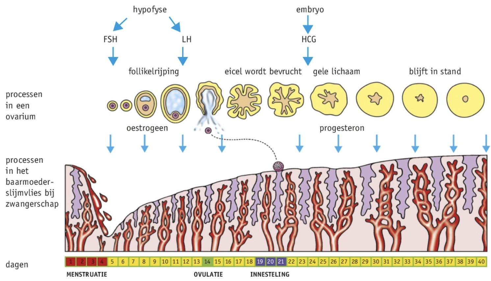
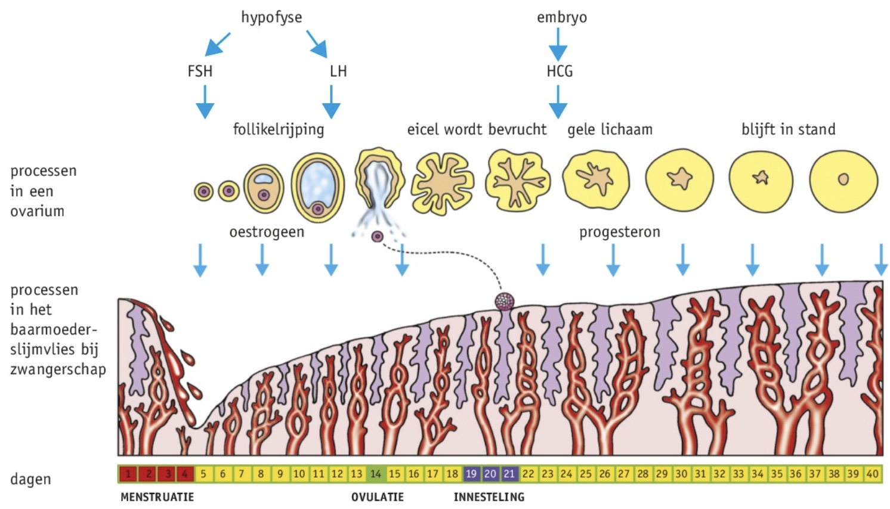

Je kunt de ontwikkeling van zygote tot volgroeide baby toelichten.
Je kunt fasen van de geboorten toelichten.
Je kunt de ontwikkeling van zygote tot volgroeide baby toelichten.
Je kunt fasen van de geboorten toelichten.

HCG
Gele lichaam produceert na bevruchting nog 3 maanden progesteron, onder invloed van HCG, geproduceerd door het kind en daarna door de placenta. Progesteron houdt de zwangerschap in stand het zorgt dat het baarmoederslijmvlies dik en klierrijk blijft. Progesteron remt de afgifte van FSH en LH door de hypofyse, hierdoor komen er geen follikels tot rijping. Ook gaan melkklieren in de borsten ontwikkelen.
Embryonale ontwikkeling
Embryonale ontwikkeling bij de mens vindt plaats in de moeder. Als de zygote deelt zonder te groeien, heten dat de klievingsdelingen, hieruit ontstaat de morula. In de baarmoeder aangekomen bevat het een holte gevuld met vocht genaamd blastula. Een deel van het klompje cellen wordt de embryo, de embryoblast/knop. De buitenste laag cellen is de trofoblast wat het chorizo / buitenste vruchtvlies, omsloten door de chorionholte. De uitstulpingen van het chorion vormt het placenta, dat stoffen uitwisselen tussen de embryo en de moeder. In de embryoblast zijn twee holtes ontstaan: de aminohte en de dooierzak, tussen deze holtes ontwikkelt de embryo. Het vruchtwater, dat de embryo beschermt tegen schokken en uitdroging, is omgeven door het amnion / binnenste vruchtvlies.
Ontwikkeling van de placenta
Bloedvaten groeien naar de placenta en vormen de navelstreng. Stofwisseling tussen moeder en kind kan door dunne haarvaten plaatst vinden door diffusie en actief transport. Sommige ziekteverwekkers kunnen de membranen ook passeren, net als alcohol en drugs. Na de achtste week is het kind een foetus, bijna alle weefsels zijn gevormd en organen zijn in aanleg.
Celdifferentiatie
Celdifferentiatie: cellen sterven en vernieuwen, beïnvloeden elkaar, ontwikkelen zich afhankelijk van de plaats. Alle cellen bevatten hetzelfde DNA, maar niet in elke cel is alles actief. Geprogrammeerde celstof heet apoptose.
Stamcellen
Cellen die nog niet volledig gespecialiseerd zijn, heten stamcellen. In beenmerg zitten cellen die kunnen uitgroeien tot bloedcellen. Adulte stamcellen kunnen beperkt differentiëren in andere Delftweg.
De geboorte
Een paar weken voor de bevalling vindt de indaling plaats. Tijdens weeën worden de baarmoederhals en de baarmoedermond wijder: ontsluiting, meestal breken dan de vruchtvliezen. Als de baby eruit is wordt de navelstreng doorgeknipt en vindt de nageboorte plaats.